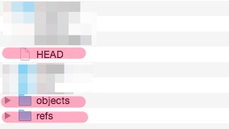

Dig the
깃 파헤치기
이종은
이종은
이종은
Titanium Developer


사용하고 계신분?
> svn
#1 Code management tool (2014)
왜 두려울까요?
- Merge는 어렵다?
- branch는 복잡하다?
아니요.
Branch 별거 아닙니다.
이 너희를 자유케 하리라
목차
개요
Commit
Branch
협업하기
반쪽은 여러분 질문
git의 탄생
파일과 함께 하는 업무
생성
수정
저장
긴급 상황
Q. 대비책이 있나요?

우리는 누구?
인간은 OO을 사용하는 동물
파일 관리 도구들

왜 사용하나요?
- 과거로 돌아가기 위해
- 여러 작업물을 합치기 위해
- 누가 했는지 추적하기 위해
- 안전하고 자유롭게 작업하기 위해
git-scm.com

SCM?
Source Code Management
Source Code!
네! 개발자를 위한 도구입니다.
리누스 토발즈

git 맛보기
앞으로 쏟아질 용어들
- Remote Repository, Local Repository
- Staging Area, Index, Working Directory, Snapshot,
- Commit, Checkout, Reset, Merge,
- HEAD, Branch, Tag,
- Pull, Push, Fork
오늘 이건 꼭 알고 가자!
1. Commit
2. Branch
왜 좋은가?
- 빠르다
- 안전하다
- 자유롭다
빠르고 안전하고 자유로운 이유 1.
거의 모든 동작은
내 컴퓨터(Local)에서 동작한다.
빠르고 안전하고 자유로운 이유 2.
분산버전 관리 시스템

빠르고 안전하고 자유로운 이유 3.
은 당신이 한 거의 모든 일을
알고 있다.
Git 이해를 위한 준비 운동
Git 설치 및 사용
- Git
git-scm.com - Source Tree (GUI Tool)
sourcetreeapp.com
git config --global user.name "Jong Eun Lee"
git config --global user.email "jong@yostudio.kr"
Git으로 기록하기
저장소 만들기
git init
.git 폴더

.git 폴더
일단 파일 만들고 커밋해보자
git add README.md
git commit -m "first commit"
Commit은
Snapshot을 저장하는 행위다.
add는 Stage 위로 올리는 것
Stage는
Commit하기 위해 준비하는Snapshot이다.
기록 절차

git add README.md
git commit -m "first commit"git commit -a -m "first commit"
파일 상태의 변화
- Untracked
- Staged
- Unmodified
- Modified
(그림으로 설명하기)
Commit
무엇이 생기고 어떤게 기록되나?
- Commit object : 최상위 폴더의 Tree hash와 Commit의 부가정보 저장
- Tree object : 폴더구조 (파일명, 하위폴더명)
(파일 내용은 포함하지 않고 Blob의 Hash만 저장) - Blob : 파일 내용
직접 파보자
git cat-file -p <object>


현재 상태 및 기록 살펴보기
git status
git log
git log -p
git reflog
커밋 해봅시다!
CLI와 Source Tree 에서 해보자.
앞서가진 마세요! 일단 지금까지 배운 것만
git init
git add FILENAME
git commit -m "COMMIT_MESSAGE"
git status
git log
Git으로 가지치기(Branch)
Q. 원래 코드와 상관없이 개발을 진행하고 싶을 때 어떻게?
- A. 프로젝트 폴더를 통째로 복사한다? (ex.myproject_원본)
이제 수동작업은 그만!
빠르고 값싼 Branch는 Git 최고의 장점
Branch의 실체 공개!
- 파일 1개로 구성
- 파일명 == Branch 명
- 내용 : 가리키는 커밋의 Hash
- 용량 : 41 Byte
단순 포인터! 겁나 싸죠?
git의 포인터들
- Branch
- tag
- HEAD
Branch 명령어 사용법
git branch
git branch <branch>
Checkout 명령어를
이용한 Branch 다루기
git checkout -b <branch>
git checkout <branch>
Merge
이용한 Branch 다루기
git merge <branch>
git merge --no-ff <branch>
Merge의 종류 1.
Fast-Forward Merge

Merge의 종류 2.
3-way merge

Git으로 되돌리기
방법 1. Checkout
특정 커밋 시점의 해당 파일의 내용을 가져와 되돌리기
git checkout <commit>
git checkout <commit> <file>
방법 2. Revert
특정 Commit을 되돌리는(Undo)하는 Commit을 생성하기
git revert <commit>
Checkout
= 과거로 상태 가져오기
Revert
= 과거 Commit의 Undo Commit 생성
방법 3. Reset
이용에 주의해야 함. 위험한(?) 명령어
File을 Reset : 해당 파일을 Unstaged 상태로 만드는 것
Commit으로 Reset : 현재 Branch를 해당 Commit으로 이동하는(되돌리는) 것
git reset <file>
git reset <commit>
Revert vs. Reset

reset is destructive operation
파괴적
또 다른 파괴적 명령어
Rebase
기타 유용한 명령어
git commit --amend -m "You can change commit message"amend: 방금 전 commit을 다시 하는 간단한 방법
git stashstash: Commit 되지 않은 변경사항을 따로 저장해두고 다음에 적용할 때
git clean -fclean: Untracked File을 지움, .gitignore에 명시된 파일은 안지움
Git 원격 저장소
Local? Remote?

지금까지는 Local
이제부터 Remote
사실 배울게
거의 없어요.
그 특별한 remote 이름
origin
Branch에서 master의 역할과 같이 기본(기준)이 되는 것
Remote를 통한 협업 과정
(Keynote..)
Remote 관련 명령어
git remote
git remote -v
git remote add <name> <url>
git remote rm <name>
git remote rename <old-name> <new-name>
Fetch vs. Pull
공통점 : Remote에 있는 선택한 Branch의 내용를 전부 가져오는 행위는 동일
차이점 : 가져와서 Merge 자동으로 해주는 것이 Pull
(내 Working Directory에 영향)
이미 존재하는 remote Repository에서 시작하기
Clone
Remote Repository를 내 local에다가 그대로 옮김
git clone <repo>
git clone <repo> <directory>
Remote를 통해 협업
Branch는 어떻게 써먹죠?
Git Workflow
Workflow = Branching 전략
- Centralized Workflow
- Feature Branch Workflow
- Gitflow Workflow
- Forking Workflow
Branch 하나만 쓸께요.
Centralized Workflow

개발 단위(기능) 별로 branch 만들께요.
Feature Branch Workflow

개발 단위(기능) 별로 branch 만들께요.
Feature Branch Workflow

Feature Branch Workflow. 심플하고 자유롭다.
너무 자유로워서 관리의 어려움

개발서버(develop), 실서버(master) 구분할께요.
Gitflow Workflow

개발서버(develop), 실서버(master) 구분할께요.
Gitflow Workflow
매번 git branch, checkout, merger,
branch 삭제 등을 해야한다고요?
네, 하지만 우리는 도구를 사용하는 동물!
Gitflow 시연
Remote Repository도 각각 따로 둘께요. 공식 Repository는 관리자만!
Forking Workflow

개발자1 관리자 개발자2
개발자1, 개발자2가 완료했다는 것을 관리자에게 어떻게 말해주지?
Pull Request
내 Repository의 이 Branch를
공식 Repository의 그 Branch에 Pull해주세요.

원격 저장소 서비스들
개발자의 SNS
오늘의 핵심!
Commit과 Branch의 이해!
미처 다루지 못한 내용 : rebase, hook, .bash_profile ..